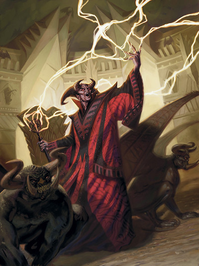
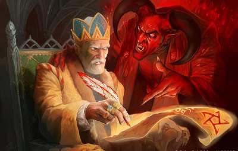

Pacte d'occultiste
Un occultiste est défini par un pacte conclu avec un être surnaturel. Parfois, la relation entre occultiste et patron est semblable à celle d’un clerc avec une divinité, bien que les êtres qui servent de patrons aux occultistes ne soient pas des dieux. Un occultiste pourrait diriger un culte dédié à un prince-démon, à un archidiable ou à une entité totalement étrangère.
Le Manuel des Joueurs explique qu'un occultiste doit avoir signé un pacte avec un être surnaturel pour obtenir ses pouvoirs, mais force est de constater que la forme que prend ce pacte n'est pas du tout développé, alors que cela constitue pourtant la base du background de tout occultiste. Voici donc quelques pistes pour définir le pacte d'un occultiste.
La classe d'occultiste présente trois types de patrons d'Outremonde : l'archifée, le fiélon et le Grand Ancien. Nous allons nous attacher en premier au plus commun d'entre eux, le fiélon, et en particulier aux diables. En effet, chaotiques par nature, les démons sont peu enclins à négocier des âmes. Ils préfèrent les voler.
Les âmes
Avant d'aller plus loin, il est indispensable de parler de l'âme des créatures du plan matériel. Il y a de cela fort longtemps, Asmodée, prince de Nessus, seigneur des enfers, passa un accord avec les dieux pour que toute âme d'un mortel loyal-mauvais soit envoyée dans son domaine afin de l'aider dans sa lutte contre les abysses, la Guerre de sang qui oppose les diables aux démons.
L'âme d'un mortel loyal-mauvais, ou de toute personne d'un autre alignement qui a de son vivant vendu son âme à un diable, lorsqu'elle arrive aux enfers, est une chose tangible qui a la forme d'un humanoïde. Elle se réveille sur les rives du lac du découragement, qui donne naissance à la rivière Styx, en Avernus. La plupart des âmes qui arrivent ici étaient déjà la propriété d'un diable bien avant que ne survienne la mort du sujet. Elles portent sa marque et sont alors récupérées par des agents du diable à qui elles appartiennent. Celles qui sont « libres » sont la source de luttes parfois mortelles entre ces agents, mais finissent toutefois rapidement capturées par l'un d'eux. Dans les deux cas, c'est le début d'un long et horrible tourment. Ses souvenirs seront effacés par les eaux folles du Styx, puis l'âme sera longuement torturée par les diables jusqu'à ce que sa personnalité soit également effacée. Corrompue, l'âme se transformera alors en un nouveau diable, le plus fréquemment en un lémure, dans le but final d'entrer au service d'Asmodée. Il existe toutefois quelques rares exceptions où la mémoire du sujet n'est pas effacée et l'âme convertit directement en diable, principalement lorsque le sujet, de son vivant, a atteint un haut niveau de connaissances qui pourrait servir aux enfers. Au nouveau diable ensuite de lutter pour monter au sein de la hiérarchie des Neuf enfers.
Le prix d'une âme
Au-delà de l'intérêt final pour Asmodée, pour comprendre l'engouement des diables pour les âmes il faut assimiler que les faveurs et les âmes sont aux diables ce que les pierres précieuses et les pièces d'or sont aux mortels : une échelle de valeur, une monnaie d'échange. Les diables cherchent en permanence à ce que quelqu'un leur doive une faveur, ce qui pour eux est la promesse d'une domination future. Et les faveurs s'échangent contre des âmes. Lorsqu'un diable négocie une âme, il ne le fait donc pas pour l'âme en elle-même, mais pour le pouvoir que cela lui procurera s'il l'échange contre une faveur. L'influence d'un diable est en fin de compte directement liée au nombre d'âmes qu'il possède.
L'importance de la hiérarchie au sein des Neuf enfers est également à prendre en compte. Les diables sont en permanence préoccupés d'être châtiés par leur supérieur, alors si on leur dit de récupérer des âmes, ils le font, tout simplement. Le supérieur n'a pas forcément besoin de celles-ci, mais pour tout diable c'est une jouissance que de donner un ordre et de le voir être exécuté. Cela renforce leur puissance apparente.
Vendre son âme
Un occultiste qui vend son âme à un diable n'est pas affecté de son vivant, mais il sait que lorsqu'il mourra, la possibilité de pouvoir être ramené à la vie, par un clerc par exemple, dépendra de la seule volonté de son patron. De son côté, le diable n'attend rien de spécial de la part de l'occultiste de son vivant. Il pourrait juste vouloir un jour précipiter la mort de l'occultiste...
Le pacte
FORMES
Un pacte avec un diable est toujours fait par écrit et contient un maximum de détails et de précisions. L'occultiste doit le signer avec son sang et le diable en conserve l'original. Une copie peut être laissée à l'occultiste s'il le demande.
Un pacte avec un archifée peut être écrit ou simplement verbal, mais pour autant il ne compromet pas moins l'occultiste.
Un pacte avec un Grand Ancien est par contre la plupart du temps verbal ou même rêvé, car les Grands Anciens, à la différence des fiélons, ne se présentent qu’extrêmement rarement physiquement face à leurs occultistes.
Maintenant qu'a été défini l'intérêt pour un diable de posséder une âme, voyons la chose du point de vue de l'occultiste. Si ce dernier conclue un pacte, c'est pour obtenir des pouvoirs spéciaux et s'en servir, bien entendu. Mais les âmes ne sont pas tout ; un patron, même dans le cas d'un diable, pourrait vouloir échanger d'autres choses avec un occultiste. Voici donc quelques idées de pactes qui peuvent être passés entre un patron d'Outremonde et un occultiste.
- [Générique] Le pacte consiste simplement à devoir rendre au patron un certain nombre de faveurs. Ce nombre doit être défini, il ne peut être infini. Le patron n'a pas forcément une idée précise de faveurs au moment de la signature, mais le simple fait de savoir que l'occultiste lui est redevable justifie le pacte.
- [Générique] Les patrons sont en lutte constante avec d'autres êtres surnaturels comme eux. L'occultiste s'engage, en signant le pacte, à assassiner ou à discréditer toute cible que le patron lui désignera le moment venu, généralement un des serviteurs de son principal concurrent.
- [Générique] L'occultiste s'engage à étendre le réseau d'influence de son patron sur le plan matériel, réseau qui servira les intérêts du patron le moment venu.
- [Générique] Principalement dans le cas d'un occultiste de sexe féminin, le pacte consiste à devoir donner au patron son premier enfant. Un nouveau-né est toujours utile, car bien plus facile à manipuler par la suite, quel que soit le patron.
- [Archifée] Le pacte consiste à devoir défendre la nature à tout prix, même au prix de sa vie.
- [Archifée] Le patron demande à l'occultiste de retrouver une relique ou un objet magique perdu.
- [Archifée] L'occultiste doit répandre la rumeur de l'importance et de la puissance de son patron.
- [Fiélon] Le pacte consiste à devoir tuer le plus possible de démons (dans le cas d'un pacte avec un diable) ou de diables (dans le cas d'un pacte avec un démon).
- [Fiélon] Le simple fait d'avoir corrompu un mortel qui n'est pas de son alignement suffit au plaisir du patron et vaut bien de lui donner quelques pouvoirs en échange.
- [Fiélon/diable] L'occultiste vend son âme à un diable. Ce dernier cherche tout simplement à augmenter le nombre d'âmes qu'il possède.
- [Fiélon/diable] L'occultiste vend son âme à un diable. Ce dernier le fait uniquement dans le but de plaire à son supérieur.
- [Fiélon/diable] L'occultiste vend son âme à un diable. Ce dernier, collectionneur, est intéressé par la race de l'occultiste si elle est rare (autre que tieffelin et humain) ou par son ascendance.
Rompre un pacte
Dans la majorité des cas, rompre le pacte avec son patron signifie perdre les pouvoirs octroyés par celui-ci. En effet, à la différence d'un magicien qui apprend à manipuler tout seul l'énergie des arcanes présente dans le multivers, de nombreuses capacités d'un occultiste dépendent exclusivement du bon vouloir de son patron. Ne plus respecter le pacte signé avec lui permet donc en retour à ce dernier de ne plus être obligé d'accorder des pouvoirs surnaturels à l'occultiste (l'occultiste perd en principe les capacités spécifiques du patron, mais conserve les capacités génériques de la classe). Dans certains cas, le patron pourrait être tellement déçu ou fâché qu'il enverra des serviteurs tuer l'occultiste. Dans d'autres, au contraire, la conséquence peut simplement être que l'occultiste ne peut plus progresser (il ne peut plus gagner de niveaux supplémentaires dans la classe d'occultiste), mais il conserve les capacités acquises.
Écrit par blueace